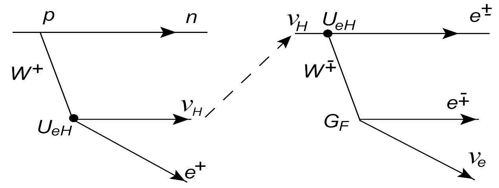
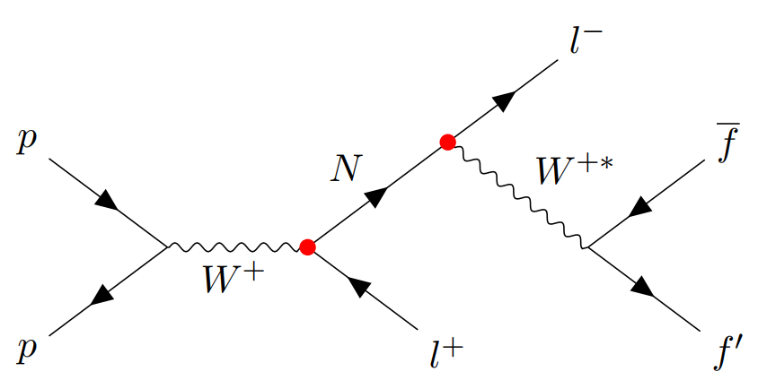

Ongoing projects
- Search for right-handed neutrino with solar neutrino detector (Jinping Neutrino Experiment)

- Search for right-handed neutrino with collider experiment (LHCb)

Past projects
- 2022-2024 Design of low-power and high-precision time-to-digital converter (TDC) for application in pixel detectors
- 2021-2024 Design, test and production of powerboards for the ATLAS ITk Strips detector Phase-II upgrade
- 2020-2021 Search for nonresonant pair production of highly energetic Higgs bosons in fully hadronic final states
- 2019-2020 First observation of the production of three massive vector bosons
- 2017-2019 Search for long-lived particles (LLP) with time delayed photons at CMS
- 2017-2019 R&D of a Mip Timing Detector for the CMS Phase 2 upgrade
- 2016-2017 Precision timing detectors using Cadmium-Telluride sensors
- 2015-2019 CMS ECAL calibration with π0→γγ events
- 2015-2017 Search for SUSY in H→γγ final states with Razor variables at CMS
- 2014-2015 Search for a time-varying electron antineutrino signal at Daya Bay